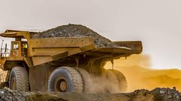

Nosotros
Somos una startup dedicada a la innovación en la industria minera. Nuestra misión es transformar el sector con soluciones tecnológicas, capacitación especializada y representación de marcas líderes a nivel global. Trabajamos con pasión por una minería más eficiente, responsable y conectada con el futuro.
Nuestro Carrusel de Imágenes
